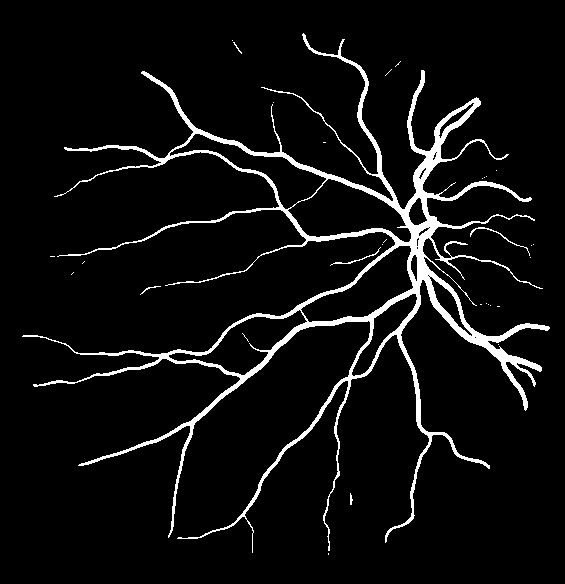

<html>

<head>
  <meta charset="UTF-8">

  <!-- favicon settings -->
  <link rel="apple-touch-icon" sizes="180x180" href="apple-touch-icon.png">
  <link rel="icon" type="image/png" sizes="32x32" href="favicon-32x32.png">
  <link rel="icon" type="image/png" sizes="16x16" href="favicon-16x16.png">
  <link rel="manifest" href="site.webmanifest">
  <link rel="mask-icon" href="safari-pinned-tab.svg" color="#5bbad5">
  <meta name="msapplication-TileColor" content="#da532c">
  <meta name="theme-color" content="#ffffff">

  <!-- zoom styles -->
  <!-- see: https://www.w3schools.com/howto/tryit.asp?filename=tryhow_js_image_zoom -->
  <meta name="viewport" content="width=device-width, initial-scale=1.0">
  <style>
    * {
      box-sizing: border-box;
    }

    .img-zoom-container {
      position: relative;
      width: 100%;
      overflow: hidden;
    }

    .img-zoom-lens {
      position: absolute;
      border: 1px solid #d4d4d4;
      /*set the size of the lens:*/
      width: 40px;
      height: 40px;
    }

    .img-zoom-result {
      border: 1px solid #d4d4d4;
      /*set the size of the result div:*/
      width: 400px;
      height: 400px;
      margin-left: 520px;
    }
  </style>

  <!-- jquery and survey.jquery -->
  <script src="https://cdnjs.cloudflare.com/ajax/libs/jquery/3.1.1/jquery.min.js"></script>
  <link href="https://unpkg.com/survey-jquery@1.8.41/modern.css" type="text/css" rel="stylesheet" />
  <script src="https://unpkg.com/survey-jquery@1.8.41/survey.jquery.min.js"></script>

  <!-- zoom script -->
  <!-- see: https://www.w3schools.com/howto/tryit.asp?filename=tryhow_js_image_zoom -->
  <script>
    let DoctorData = {
      //PHP-DOCTOR-DATA-REPLACE
    };
    let SurveyData = {
      //PHP-SURVEY-DATA-REPLACE
    };
    function imageZoom(imgID, resultID) {
      var img, lens, result, cx, cy;
      img = document.getElementById(imgID);
      result = document.getElementById(resultID);
      /*create lens:*/
      lens = document.createElement("DIV");
      lens.setAttribute("class", "img-zoom-lens");
      /*insert lens:*/
      img.parentElement.insertBefore(lens, img);
      /*calculate the ratio between result DIV and lens:*/
      cx = result.offsetWidth / lens.offsetWidth;
      cy = result.offsetHeight / lens.offsetHeight;
      /*set background properties for the result DIV:*/
      result.style.backgroundImage = "url('" + img.src + "')";
      result.style.backgroundSize = (img.width * cx) + "px " + (img.height * cy) + "px";
      /*execute a function when someone moves the cursor over the image, or the lens:*/
      lens.addEventListener("mousemove", moveLens);
      img.addEventListener("mousemove", moveLens);
      /*and also for touch screens:*/
      lens.addEventListener("touchmove", moveLens);
      img.addEventListener("touchmove", moveLens);
      function moveLens(e) {
        var pos, x, y;
        /*prevent any other actions that may occur when moving over the image:*/
        e.preventDefault();
        /*get the cursor's x and y positions:*/
        pos = getCursorPos(e);
        /*calculate the position of the lens:*/
        x = pos.x - (lens.offsetWidth / 2);
        y = pos.y - (lens.offsetHeight / 2);
        /*prevent the lens from being positioned outside the image:*/
        if (x > img.width - lens.offsetWidth) { x = img.width - lens.offsetWidth; }
        if (x < 0) { x = 0; }
        if (y > img.height - lens.offsetHeight) { y = img.height - lens.offsetHeight; }
        if (y < 0) { y = 0; }
        /*set the position of the lens:*/
        lens.style.left = x + "px";
        lens.style.top = y + "px";
        /*display what the lens "sees":*/
        result.style.backgroundPosition = "-" + (x * cx) + "px -" + (y * cy) + "px";
      }
      function getCursorPos(e) {
        var a, x = 0, y = 0;
        e = e || window.event;
        /*get the x and y positions of the image:*/
        a = img.getBoundingClientRect();
        /*calculate the cursor's x and y coordinates, relative to the image:*/
        x = e.pageX - a.left;
        y = e.pageY - a.top;
        /*consider any page scrolling:*/
        x = x - window.pageXOffset;
        y = y - window.pageYOffset;
        return { x: x, y: y };
      }
    }
  </script>
</head>


<body>
  <div id="surveyContainer"></div>

  <!-- Init survey -->
  <script>
    Survey.StylesManager.applyTheme("modern");
    var surveyJSON = { pages: [{ name: "page-61", elements: [{ type: "html", name: "s7-q61-img", html: "<div class='img-zoom-container'><div style='width: 500px; float: left'></div><div id='000278-eswanet-stare-zoom' class='img-zoom-result'></div></div>"},{ type: "radiogroup", name: "s7-q61-choice", isRequired: true, state: "expanded", title: "You are given a picture of the fundus. From the offered claims, select the one you agree with the most.", choices: [{ value: "diabetic_retinopathy", text: "I think this image shows signs of diabetic retinopathy."},{ value: "cilio_retinal_artery_occlusion", text: "I think this image shows signs of cilio-retinal artery occlusion."},{ value: "central_retinal_artery_occlusion", text: "I think this image shows signs of central-retinal artery occlusion."},{ value: "background_diabetic_retinopathy", text: "I think this image shows signs of background diabetic retinopathy."},{ value: "central_retinal_vein_occlusion", text: "I think this image shows signs of central retinal vein occlusion."},{ value: "arteriosclerotic_retinopathy", text: "I think this image shows signs of arteriosclerotic retinopathy."},{ value: "none", text: "I think that this picture does not show any of the mentioned diseases."},{ value: "not_applicable", text: "The picture is not good enough to set a diagnosis."}]}, { type: "rating", name: "s7-q61-certainty", state: "expanded", title: "How confident are you in the answer you gave in the previous question?", requiredErrorText: "Please answer this question.", isRequired: true, rateMin: 1, rateMax: 5, minRateDescription: "Not confident at all", maxRateDescription: "Very confident" }], title: "Question 61" }, { name: "page-25", elements: [{ type: "html", name: "s7-q25-img", html: "<div class='img-zoom-container'><div style='width: 500px; float: left'></div><div id='002670-iternet_uni-drive-zoom' class='img-zoom-result'></div></div>" }, { type: "radiogroup", name: "s7-q25-choice", isRequired: true, state: "expanded", title: "Data Vam je slika očnog dna. Od ponuđenih tvrdnji selektujte onu sa kojom se slažete.", requiredErrorText: "Molimo Vas da odgovorite na ovo pitanje.", choices: [{ value: "diabetic_retinopathy", text: "Smatram da ova slika predstavlja pacijenta sa oboljenjem Diabetic retinopathy." }, { value: "cilio_retinal_artery_occlusion", text: "Smatram da ova slika predstavlja pacijenta sa oboljenjem Cilio-retinal artery occlusion." }, { value: "central_retinal_artery_occlusion", text: "Smatram da ova slika predstavlja pacijenta sa oboljenjem Central-retinal artery occlusion." }, { value: "background_diabetic_retinopathy", text: "Smatram da ova slika predstavlja pacijenta sa oboljenjem Background diabetic retinopathy." }, { value: "central_retinal_vein_occlusion", text: "Smatram da ova slika predstavlja pacijenta sa oboljenjem Central retinal vein occlusion." }, { value: "arteriosclerotic_retinopathy", text: "Smatram da ova slika predstavlja pacijenta sa oboljenjem Arteriosclerotic retinopathy." }, { value: "none", text: "Smatram da ova slika ne prikazuje ni jedno od navedenih oboljenja." }, { value: "not_applicable", text: "Slika nije dovoljno dobra za postavljanje dijagnoze." }] }, { type: "rating", name: "s7-q25-certainty", state: "expanded", title: "Koliko ste sigurni u odgovor koji ste dali u prethodnom pitanju?", requiredErrorText: "Molimo Vas da odgovorite na ovo pitanje.", isRequired: true, rateMin: 1, rateMax: 5, minRateDescription: "Veoma nesiguran/na", maxRateDescription: "Veoma siguran/na " }], title: "Pitanje 25" }, { name: "page-58", elements: [{ type: "html", name: "s7-q58-img", html: "<div class='img-zoom-container'><div style='width: 500px; float: left'></div><div id='000278-laddernet-stare-zoom' class='img-zoom-result'></div></div>" }, { type: "radiogroup", name: "s7-q58-choice", isRequired: true, state: "expanded", title: "Data Vam je slika očnog dna. Od ponuđenih tvrdnji selektujte onu sa kojom se slažete.", requiredErrorText: "Molimo Vas da odgovorite na ovo pitanje.", choices: [{ value: "diabetic_retinopathy", text: "Smatram da ova slika predstavlja pacijenta sa oboljenjem Diabetic retinopathy." }, { value: "cilio_retinal_artery_occlusion", text: "Smatram da ova slika predstavlja pacijenta sa oboljenjem Cilio-retinal artery occlusion." }, { value: "central_retinal_artery_occlusion", text: "Smatram da ova slika predstavlja pacijenta sa oboljenjem Central-retinal artery occlusion." }, { value: "background_diabetic_retinopathy", text: "Smatram da ova slika predstavlja pacijenta sa oboljenjem Background diabetic retinopathy." }, { value: "central_retinal_vein_occlusion", text: "Smatram da ova slika predstavlja pacijenta sa oboljenjem Central retinal vein occlusion." }, { value: "arteriosclerotic_retinopathy", text: "Smatram da ova slika predstavlja pacijenta sa oboljenjem Arteriosclerotic retinopathy." }, { value: "none", text: "Smatram da ova slika ne prikazuje ni jedno od navedenih oboljenja." }, { value: "not_applicable", text: "Slika nije dovoljno dobra za postavljanje dijagnoze." }] }, { type: "rating", name: "s7-q58-certainty", state: "expanded", title: "Koliko ste sigurni u odgovor koji ste dali u prethodnom pitanju?", requiredErrorText: "Molimo Vas da odgovorite na ovo pitanje.", isRequired: true, rateMin: 1, rateMax: 5, minRateDescription: "Veoma nesiguran/na", maxRateDescription: "Veoma siguran/na " }], title: "Pitanje 58" }, { name: "page-53", elements: [{ type: "html", name: "s7-q53-img", html: "<div class='img-zoom-container'><div style='width: 500px; float: left'></div><div id='000039-iternet_uni-stare-zoom' class='img-zoom-result'></div></div>" }, { type: "radiogroup", name: "s7-q53-choice", isRequired: true, state: "expanded", title: "Data Vam je slika očnog dna. Od ponuđenih tvrdnji selektujte onu sa kojom se slažete.", requiredErrorText: "Molimo Vas da odgovorite na ovo pitanje.", choices: [{ value: "diabetic_retinopathy", text: "Smatram da ova slika predstavlja pacijenta sa oboljenjem Diabetic retinopathy." }, { value: "cilio_retinal_artery_occlusion", text: "Smatram da ova slika predstavlja pacijenta sa oboljenjem Cilio-retinal artery occlusion." }, { value: "central_retinal_artery_occlusion", text: "Smatram da ova slika predstavlja pacijenta sa oboljenjem Central-retinal artery occlusion." }, { value: "background_diabetic_retinopathy", text: "Smatram da ova slika predstavlja pacijenta sa oboljenjem Background diabetic retinopathy." }, { value: "central_retinal_vein_occlusion", text: "Smatram da ova slika predstavlja pacijenta sa oboljenjem Central retinal vein occlusion." }, { value: "arteriosclerotic_retinopathy", text: "Smatram da ova slika predstavlja pacijenta sa oboljenjem Arteriosclerotic retinopathy." }, { value: "none", text: "Smatram da ova slika ne prikazuje ni jedno od navedenih oboljenja." }, { value: "not_applicable", text: "Slika nije dovoljno dobra za postavljanje dijagnoze." }] }, { type: "rating", name: "s7-q53-certainty", state: "expanded", title: "Koliko ste sigurni u odgovor koji ste dali u prethodnom pitanju?", requiredErrorText: "Molimo Vas da odgovorite na ovo pitanje.", isRequired: true, rateMin: 1, rateMax: 5, minRateDescription: "Veoma nesiguran/na", maxRateDescription: "Veoma siguran/na " }], title: "Pitanje 53" }, { name: "page-26", elements: [{ type: "html", name: "s7-q26-img", html: "<div class='img-zoom-container'><div style='width: 500px; float: left'></div><div id='002670-vgan-drive-zoom' class='img-zoom-result'></div></div>" }, { type: "radiogroup", name: "s7-q26-choice", isRequired: true, state: "expanded", title: "Data Vam je slika očnog dna. Od ponuđenih tvrdnji selektujte onu sa kojom se slažete.", requiredErrorText: "Molimo Vas da odgovorite na ovo pitanje.", choices: [{ value: "diabetic_retinopathy", text: "Smatram da ova slika predstavlja pacijenta sa oboljenjem Diabetic retinopathy." }, { value: "cilio_retinal_artery_occlusion", text: "Smatram da ova slika predstavlja pacijenta sa oboljenjem Cilio-retinal artery occlusion." }, { value: "central_retinal_artery_occlusion", text: "Smatram da ova slika predstavlja pacijenta sa oboljenjem Central-retinal artery occlusion." }, { value: "background_diabetic_retinopathy", text: "Smatram da ova slika predstavlja pacijenta sa oboljenjem Background diabetic retinopathy." }, { value: "central_retinal_vein_occlusion", text: "Smatram da ova slika predstavlja pacijenta sa oboljenjem Central retinal vein occlusion." }, { value: "arteriosclerotic_retinopathy", text: "Smatram da ova slika predstavlja pacijenta sa oboljenjem Arteriosclerotic retinopathy." }, { value: "none", text: "Smatram da ova slika ne prikazuje ni jedno od navedenih oboljenja." }, { value: "not_applicable", text: "Slika nije dovoljno dobra za postavljanje dijagnoze." }] }, { type: "rating", name: "s7-q26-certainty", state: "expanded", title: "Koliko ste sigurni u odgovor koji ste dali u prethodnom pitanju?", requiredErrorText: "Molimo Vas da odgovorite na ovo pitanje.", isRequired: true, rateMin: 1, rateMax: 5, minRateDescription: "Veoma nesiguran/na", maxRateDescription: "Veoma siguran/na " }], title: "Pitanje 26" }, { name: "page-14", elements: [{ type: "html", name: "s7-q14-img", html: "<div class='img-zoom-container'><div style='width: 500px; float: left'></div><div id='000613-saunet-drive-zoom' class='img-zoom-result'></div></div>" }, { type: "radiogroup", name: "s7-q14-choice", isRequired: true, state: "expanded", title: "Data Vam je slika očnog dna. Od ponuđenih tvrdnji selektujte onu sa kojom se slažete.", requiredErrorText: "Molimo Vas da odgovorite na ovo pitanje.", choices: [{ value: "diabetic_retinopathy", text: "Smatram da ova slika predstavlja pacijenta sa oboljenjem Diabetic retinopathy." }, { value: "cilio_retinal_artery_occlusion", text: "Smatram da ova slika predstavlja pacijenta sa oboljenjem Cilio-retinal artery occlusion." }, { value: "central_retinal_artery_occlusion", text: "Smatram da ova slika predstavlja pacijenta sa oboljenjem Central-retinal artery occlusion." }, { value: "background_diabetic_retinopathy", text: "Smatram da ova slika predstavlja pacijenta sa oboljenjem Background diabetic retinopathy." }, { value: "central_retinal_vein_occlusion", text: "Smatram da ova slika predstavlja pacijenta sa oboljenjem Central retinal vein occlusion." }, { value: "arteriosclerotic_retinopathy", text: "Smatram da ova slika predstavlja pacijenta sa oboljenjem Arteriosclerotic retinopathy." }, { value: "none", text: "Smatram da ova slika ne prikazuje ni jedno od navedenih oboljenja." }, { value: "not_applicable", text: "Slika nije dovoljno dobra za postavljanje dijagnoze." }] }, { type: "rating", name: "s7-q14-certainty", state: "expanded", title: "Koliko ste sigurni u odgovor koji ste dali u prethodnom pitanju?", requiredErrorText: "Molimo Vas da odgovorite na ovo pitanje.", isRequired: true, rateMin: 1, rateMax: 5, minRateDescription: "Veoma nesiguran/na", maxRateDescription: "Veoma siguran/na " }], title: "Pitanje 14" }, { name: "page-37", elements: [{ type: "html", name: "s7-q37-img", html: "<div class='img-zoom-container'><div style='width: 500px; float: left'></div><div id='003522-vgan-drive-zoom' class='img-zoom-result'></div></div>" }, { type: "radiogroup", name: "s7-q37-choice", isRequired: true, state: "expanded", title: "Data Vam je slika očnog dna. Od ponuđenih tvrdnji selektujte onu sa kojom se slažete.", requiredErrorText: "Molimo Vas da odgovorite na ovo pitanje.", choices: [{ value: "diabetic_retinopathy", text: "Smatram da ova slika predstavlja pacijenta sa oboljenjem Diabetic retinopathy." }, { value: "cilio_retinal_artery_occlusion", text: "Smatram da ova slika predstavlja pacijenta sa oboljenjem Cilio-retinal artery occlusion." }, { value: "central_retinal_artery_occlusion", text: "Smatram da ova slika predstavlja pacijenta sa oboljenjem Central-retinal artery occlusion." }, { value: "background_diabetic_retinopathy", text: "Smatram da ova slika predstavlja pacijenta sa oboljenjem Background diabetic retinopathy." }, { value: "central_retinal_vein_occlusion", text: "Smatram da ova slika predstavlja pacijenta sa oboljenjem Central retinal vein occlusion." }, { value: "arteriosclerotic_retinopathy", text: "Smatram da ova slika predstavlja pacijenta sa oboljenjem Arteriosclerotic retinopathy." }, { value: "none", text: "Smatram da ova slika ne prikazuje ni jedno od navedenih oboljenja." }, { value: "not_applicable", text: "Slika nije dovoljno dobra za postavljanje dijagnoze." }] }, { type: "rating", name: "s7-q37-certainty", state: "expanded", title: "Koliko ste sigurni u odgovor koji ste dali u prethodnom pitanju?", requiredErrorText: "Molimo Vas da odgovorite na ovo pitanje.", isRequired: true, rateMin: 1, rateMax: 5, minRateDescription: "Veoma nesiguran/na", maxRateDescription: "Veoma siguran/na " }], title: "Pitanje 37" }, { name: "page-60", elements: [{ type: "html", name: "s7-q60-img", html: "<div class='img-zoom-container'><div style='width: 500px; float: left'></div><div id='000278-vesselunet-stare-zoom' class='img-zoom-result'></div></div>" }, { type: "radiogroup", name: "s7-q60-choice", isRequired: true, state: "expanded", title: "Data Vam je slika očnog dna. Od ponuđenih tvrdnji selektujte onu sa kojom se slažete.", requiredErrorText: "Molimo Vas da odgovorite na ovo pitanje.", choices: [{ value: "diabetic_retinopathy", text: "Smatram da ova slika predstavlja pacijenta sa oboljenjem Diabetic retinopathy." }, { value: "cilio_retinal_artery_occlusion", text: "Smatram da ova slika predstavlja pacijenta sa oboljenjem Cilio-retinal artery occlusion." }, { value: "central_retinal_artery_occlusion", text: "Smatram da ova slika predstavlja pacijenta sa oboljenjem Central-retinal artery occlusion." }, { value: "background_diabetic_retinopathy", text: "Smatram da ova slika predstavlja pacijenta sa oboljenjem Background diabetic retinopathy." }, { value: "central_retinal_vein_occlusion", text: "Smatram da ova slika predstavlja pacijenta sa oboljenjem Central retinal vein occlusion." }, { value: "arteriosclerotic_retinopathy", text: "Smatram da ova slika predstavlja pacijenta sa oboljenjem Arteriosclerotic retinopathy." }, { value: "none", text: "Smatram da ova slika ne prikazuje ni jedno od navedenih oboljenja." }, { value: "not_applicable", text: "Slika nije dovoljno dobra za postavljanje dijagnoze." }] }, { type: "rating", name: "s7-q60-certainty", state: "expanded", title: "Koliko ste sigurni u odgovor koji ste dali u prethodnom pitanju?", requiredErrorText: "Molimo Vas da odgovorite na ovo pitanje.", isRequired: true, rateMin: 1, rateMax: 5, minRateDescription: "Veoma nesiguran/na", maxRateDescription: "Veoma siguran/na " }], title: "Pitanje 60" }, { name: "page-71", elements: [{ type: "html", name: "s7-q71-img", html: "<div class='img-zoom-container'><div style='width: 500px; float: left'></div><div id='001078-laddernet-stare-zoom' class='img-zoom-result'></div></div>" }, { type: "radiogroup", name: "s7-q71-choice", isRequired: true, state: "expanded", title: "Data Vam je slika očnog dna. Od ponuđenih tvrdnji selektujte onu sa kojom se slažete.", requiredErrorText: "Molimo Vas da odgovorite na ovo pitanje.", choices: [{ value: "diabetic_retinopathy", text: "Smatram da ova slika predstavlja pacijenta sa oboljenjem Diabetic retinopathy." }, { value: "cilio_retinal_artery_occlusion", text: "Smatram da ova slika predstavlja pacijenta sa oboljenjem Cilio-retinal artery occlusion." }, { value: "central_retinal_artery_occlusion", text: "Smatram da ova slika predstavlja pacijenta sa oboljenjem Central-retinal artery occlusion." }, { value: "background_diabetic_retinopathy", text: "Smatram da ova slika predstavlja pacijenta sa oboljenjem Background diabetic retinopathy." }, { value: "central_retinal_vein_occlusion", text: "Smatram da ova slika predstavlja pacijenta sa oboljenjem Central retinal vein occlusion." }, { value: "arteriosclerotic_retinopathy", text: "Smatram da ova slika predstavlja pacijenta sa oboljenjem Arteriosclerotic retinopathy." }, { value: "none", text: "Smatram da ova slika ne prikazuje ni jedno od navedenih oboljenja." }, { value: "not_applicable", text: "Slika nije dovoljno dobra za postavljanje dijagnoze." }] }, { type: "rating", name: "s7-q71-certainty", state: "expanded", title: "Koliko ste sigurni u odgovor koji ste dali u prethodnom pitanju?", requiredErrorText: "Molimo Vas da odgovorite na ovo pitanje.", isRequired: true, rateMin: 1, rateMax: 5, minRateDescription: "Veoma nesiguran/na", maxRateDescription: "Veoma siguran/na " }], title: "Pitanje 71" }, { name: "page-13", elements: [{ type: "html", name: "s7-q13-img", html: "<div class='img-zoom-container'><div style='width: 500px; float: left'></div><div id='000613-vesselunet-drive-zoom' class='img-zoom-result'></div></div>" }, { type: "radiogroup", name: "s7-q13-choice", isRequired: true, state: "expanded", title: "Data Vam je slika očnog dna. Od ponuđenih tvrdnji selektujte onu sa kojom se slažete.", requiredErrorText: "Molimo Vas da odgovorite na ovo pitanje.", choices: [{ value: "diabetic_retinopathy", text: "Smatram da ova slika predstavlja pacijenta sa oboljenjem Diabetic retinopathy." }, { value: "cilio_retinal_artery_occlusion", text: "Smatram da ova slika predstavlja pacijenta sa oboljenjem Cilio-retinal artery occlusion." }, { value: "central_retinal_artery_occlusion", text: "Smatram da ova slika predstavlja pacijenta sa oboljenjem Central-retinal artery occlusion." }, { value: "background_diabetic_retinopathy", text: "Smatram da ova slika predstavlja pacijenta sa oboljenjem Background diabetic retinopathy." }, { value: "central_retinal_vein_occlusion", text: "Smatram da ova slika predstavlja pacijenta sa oboljenjem Central retinal vein occlusion." }, { value: "arteriosclerotic_retinopathy", text: "Smatram da ova slika predstavlja pacijenta sa oboljenjem Arteriosclerotic retinopathy." }, { value: "none", text: "Smatram da ova slika ne prikazuje ni jedno od navedenih oboljenja." }, { value: "not_applicable", text: "Slika nije dovoljno dobra za postavljanje dijagnoze." }] }, { type: "rating", name: "s7-q13-certainty", state: "expanded", title: "Koliko ste sigurni u odgovor koji ste dali u prethodnom pitanju?", requiredErrorText: "Molimo Vas da odgovorite na ovo pitanje.", isRequired: true, rateMin: 1, rateMax: 5, minRateDescription: "Veoma nesiguran/na", maxRateDescription: "Veoma siguran/na " }], title: "Pitanje 13" }, { name: "page-68", elements: [{ type: "html", name: "s7-q68-img", html: "<div class='img-zoom-container'><div style='width: 500px; float: left'></div><div id='001041-vesselunet-stare-zoom' class='img-zoom-result'></div></div>" }, { type: "radiogroup", name: "s7-q68-choice", isRequired: true, state: "expanded", title: "Data Vam je slika očnog dna. Od ponuđenih tvrdnji selektujte onu sa kojom se slažete.", requiredErrorText: "Molimo Vas da odgovorite na ovo pitanje.", choices: [{ value: "diabetic_retinopathy", text: "Smatram da ova slika predstavlja pacijenta sa oboljenjem Diabetic retinopathy." }, { value: "cilio_retinal_artery_occlusion", text: "Smatram da ova slika predstavlja pacijenta sa oboljenjem Cilio-retinal artery occlusion." }, { value: "central_retinal_artery_occlusion", text: "Smatram da ova slika predstavlja pacijenta sa oboljenjem Central-retinal artery occlusion." }, { value: "background_diabetic_retinopathy", text: "Smatram da ova slika predstavlja pacijenta sa oboljenjem Background diabetic retinopathy." }, { value: "central_retinal_vein_occlusion", text: "Smatram da ova slika predstavlja pacijenta sa oboljenjem Central retinal vein occlusion." }, { value: "arteriosclerotic_retinopathy", text: "Smatram da ova slika predstavlja pacijenta sa oboljenjem Arteriosclerotic retinopathy." }, { value: "none", text: "Smatram da ova slika ne prikazuje ni jedno od navedenih oboljenja." }, { value: "not_applicable", text: "Slika nije dovoljno dobra za postavljanje dijagnoze." }] }, { type: "rating", name: "s7-q68-certainty", state: "expanded", title: "Koliko ste sigurni u odgovor koji ste dali u prethodnom pitanju?", requiredErrorText: "Molimo Vas da odgovorite na ovo pitanje.", isRequired: true, rateMin: 1, rateMax: 5, minRateDescription: "Veoma nesiguran/na", maxRateDescription: "Veoma siguran/na " }], title: "Pitanje 68" }, { name: "page-6", elements: [{ type: "html", name: "s7-q6-img", html: "<div class='img-zoom-container'><div style='width: 500px; float: left'></div><div id='000000-iternet_uni-drive-zoom' class='img-zoom-result'></div></div>" }, { type: "radiogroup", name: "s7-q6-choice", isRequired: true, state: "expanded", title: "Data Vam je slika očnog dna. Od ponuđenih tvrdnji selektujte onu sa kojom se slažete.", requiredErrorText: "Molimo Vas da odgovorite na ovo pitanje.", choices: [{ value: "diabetic_retinopathy", text: "Smatram da ova slika predstavlja pacijenta sa oboljenjem Diabetic retinopathy." }, { value: "cilio_retinal_artery_occlusion", text: "Smatram da ova slika predstavlja pacijenta sa oboljenjem Cilio-retinal artery occlusion." }, { value: "central_retinal_artery_occlusion", text: "Smatram da ova slika predstavlja pacijenta sa oboljenjem Central-retinal artery occlusion." }, { value: "background_diabetic_retinopathy", text: "Smatram da ova slika predstavlja pacijenta sa oboljenjem Background diabetic retinopathy." }, { value: "central_retinal_vein_occlusion", text: "Smatram da ova slika predstavlja pacijenta sa oboljenjem Central retinal vein occlusion." }, { value: "arteriosclerotic_retinopathy", text: "Smatram da ova slika predstavlja pacijenta sa oboljenjem Arteriosclerotic retinopathy." }, { value: "none", text: "Smatram da ova slika ne prikazuje ni jedno od navedenih oboljenja." }, { value: "not_applicable", text: "Slika nije dovoljno dobra za postavljanje dijagnoze." }] }, { type: "rating", name: "s7-q6-certainty", state: "expanded", title: "Koliko ste sigurni u odgovor koji ste dali u prethodnom pitanju?", requiredErrorText: "Molimo Vas da odgovorite na ovo pitanje.", isRequired: true, rateMin: 1, rateMax: 5, minRateDescription: "Veoma nesiguran/na", maxRateDescription: "Veoma siguran/na " }], title: "Pitanje 6" }, { name: "page-29", elements: [{ type: "html", name: "s7-q29-img", html: "<div class='img-zoom-container'><div style='width: 500px; float: left'></div><div id='002764-vesselunet-drive-zoom' class='img-zoom-result'></div></div>" }, { type: "radiogroup", name: "s7-q29-choice", isRequired: true, state: "expanded", title: "Data Vam je slika očnog dna. Od ponuđenih tvrdnji selektujte onu sa kojom se slažete.", requiredErrorText: "Molimo Vas da odgovorite na ovo pitanje.", choices: [{ value: "diabetic_retinopathy", text: "Smatram da ova slika predstavlja pacijenta sa oboljenjem Diabetic retinopathy." }, { value: "cilio_retinal_artery_occlusion", text: "Smatram da ova slika predstavlja pacijenta sa oboljenjem Cilio-retinal artery occlusion." }, { value: "central_retinal_artery_occlusion", text: "Smatram da ova slika predstavlja pacijenta sa oboljenjem Central-retinal artery occlusion." }, { value: "background_diabetic_retinopathy", text: "Smatram da ova slika predstavlja pacijenta sa oboljenjem Background diabetic retinopathy." }, { value: "central_retinal_vein_occlusion", text: "Smatram da ova slika predstavlja pacijenta sa oboljenjem Central retinal vein occlusion." }, { value: "arteriosclerotic_retinopathy", text: "Smatram da ova slika predstavlja pacijenta sa oboljenjem Arteriosclerotic retinopathy." }, { value: "none", text: "Smatram da ova slika ne prikazuje ni jedno od navedenih oboljenja." }, { value: "not_applicable", text: "Slika nije dovoljno dobra za postavljanje dijagnoze." }] }, { type: "rating", name: "s7-q29-certainty", state: "expanded", title: "Koliko ste sigurni u odgovor koji ste dali u prethodnom pitanju?", requiredErrorText: "Molimo Vas da odgovorite na ovo pitanje.", isRequired: true, rateMin: 1, rateMax: 5, minRateDescription: "Veoma nesiguran/na", maxRateDescription: "Veoma siguran/na " }], title: "Pitanje 29" }, { name: "page-73", elements: [{ type: "html", name: "s7-q73-img", html: "<div class='img-zoom-container'><div style='width: 500px; float: left'></div><div id='001078-vesselunet-stare-zoom' class='img-zoom-result'></div></div>" }, { type: "radiogroup", name: "s7-q73-choice", isRequired: true, state: "expanded", title: "Data Vam je slika očnog dna. Od ponuđenih tvrdnji selektujte onu sa kojom se slažete.", requiredErrorText: "Molimo Vas da odgovorite na ovo pitanje.", choices: [{ value: "diabetic_retinopathy", text: "Smatram da ova slika predstavlja pacijenta sa oboljenjem Diabetic retinopathy." }, { value: "cilio_retinal_artery_occlusion", text: "Smatram da ova slika predstavlja pacijenta sa oboljenjem Cilio-retinal artery occlusion." }, { value: "central_retinal_artery_occlusion", text: "Smatram da ova slika predstavlja pacijenta sa oboljenjem Central-retinal artery occlusion." }, { value: "background_diabetic_retinopathy", text: "Smatram da ova slika predstavlja pacijenta sa oboljenjem Background diabetic retinopathy." }, { value: "central_retinal_vein_occlusion", text: "Smatram da ova slika predstavlja pacijenta sa oboljenjem Central retinal vein occlusion." }, { value: "arteriosclerotic_retinopathy", text: "Smatram da ova slika predstavlja pacijenta sa oboljenjem Arteriosclerotic retinopathy." }, { value: "none", text: "Smatram da ova slika ne prikazuje ni jedno od navedenih oboljenja." }, { value: "not_applicable", text: "Slika nije dovoljno dobra za postavljanje dijagnoze." }] }, { type: "rating", name: "s7-q73-certainty", state: "expanded", title: "Koliko ste sigurni u odgovor koji ste dali u prethodnom pitanju?", requiredErrorText: "Molimo Vas da odgovorite na ovo pitanje.", isRequired: true, rateMin: 1, rateMax: 5, minRateDescription: "Veoma nesiguran/na", maxRateDescription: "Veoma siguran/na " }], title: "Pitanje 73" }, { name: "page-55", elements: [{ type: "html", name: "s7-q55-img", html: "<div class='img-zoom-container'><div style='width: 500px; float: left'></div><div id='000039-saunet-stare-zoom' class='img-zoom-result'></div></div>" }, { type: "radiogroup", name: "s7-q55-choice", isRequired: true, state: "expanded", title: "Data Vam je slika očnog dna. Od ponuđenih tvrdnji selektujte onu sa kojom se slažete.", requiredErrorText: "Molimo Vas da odgovorite na ovo pitanje.", choices: [{ value: "diabetic_retinopathy", text: "Smatram da ova slika predstavlja pacijenta sa oboljenjem Diabetic retinopathy." }, { value: "cilio_retinal_artery_occlusion", text: "Smatram da ova slika predstavlja pacijenta sa oboljenjem Cilio-retinal artery occlusion." }, { value: "central_retinal_artery_occlusion", text: "Smatram da ova slika predstavlja pacijenta sa oboljenjem Central-retinal artery occlusion." }, { value: "background_diabetic_retinopathy", text: "Smatram da ova slika predstavlja pacijenta sa oboljenjem Background diabetic retinopathy." }, { value: "central_retinal_vein_occlusion", text: "Smatram da ova slika predstavlja pacijenta sa oboljenjem Central retinal vein occlusion." }, { value: "arteriosclerotic_retinopathy", text: "Smatram da ova slika predstavlja pacijenta sa oboljenjem Arteriosclerotic retinopathy." }, { value: "none", text: "Smatram da ova slika ne prikazuje ni jedno od navedenih oboljenja." }, { value: "not_applicable", text: "Slika nije dovoljno dobra za postavljanje dijagnoze." }] }, { type: "rating", name: "s7-q55-certainty", state: "expanded", title: "Koliko ste sigurni u odgovor koji ste dali u prethodnom pitanju?", requiredErrorText: "Molimo Vas da odgovorite na ovo pitanje.", isRequired: true, rateMin: 1, rateMax: 5, minRateDescription: "Veoma nesiguran/na", maxRateDescription: "Veoma siguran/na " }], title: "Pitanje 55" }], pagePrevText: "Prethodna", pageNextText: "Next page", completeText: "Završi", completedHtml: "Uspešno ste popunili anketu. Hvala!" }
    function sendDataToServer(sender) {
      let aid = SurveyData.id;
      let akey = SurveyData.APIKey;
      let xhr = new XMLHttpRequest();
      xhr.open("POST", "./advance.php?anketa=" + aid + "&api=" + akey);
      xhr.setRequestHeader("Content-Type", "application/json; charset=utf-8");
      xhr.send(JSON.stringify(sender.data));
    }
    var survey = new Survey.Model(surveyJSON);
    $("#surveyContainer").Survey({
      model: survey,
      onComplete: sendDataToServer
    });
  </script>
</body>

</html>